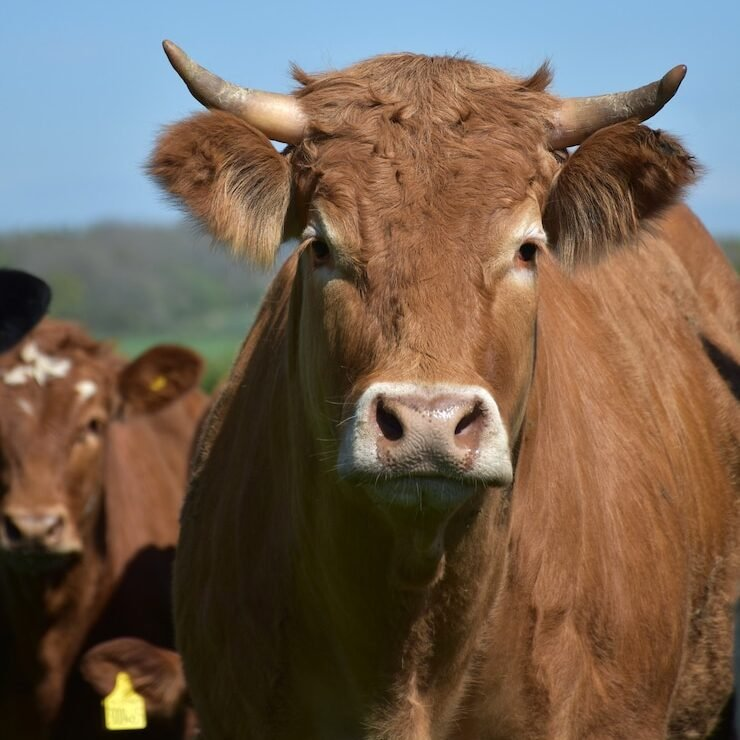
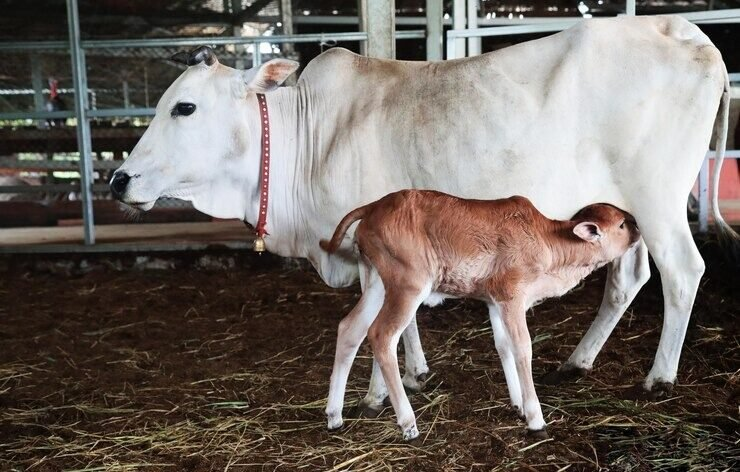
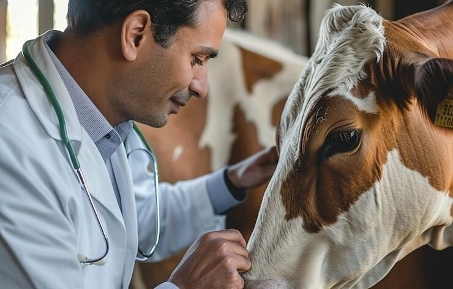
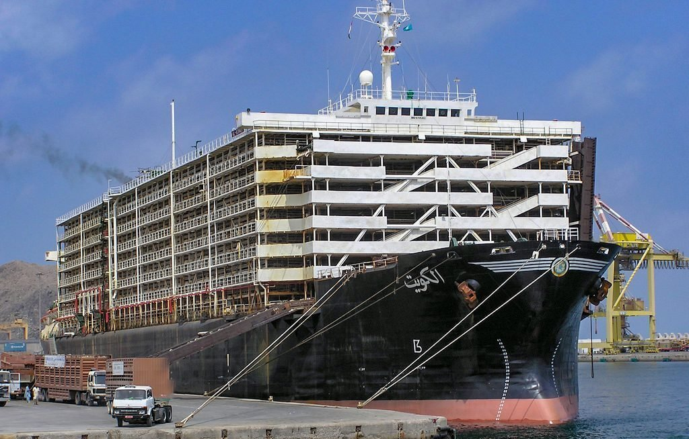
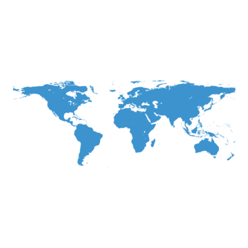
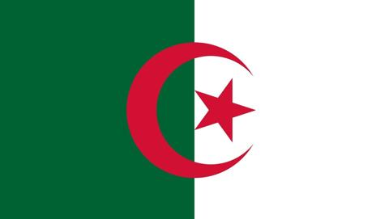
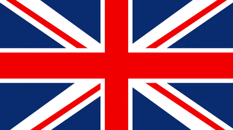
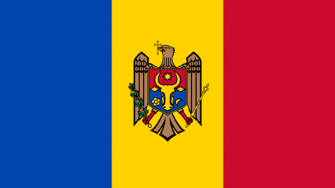
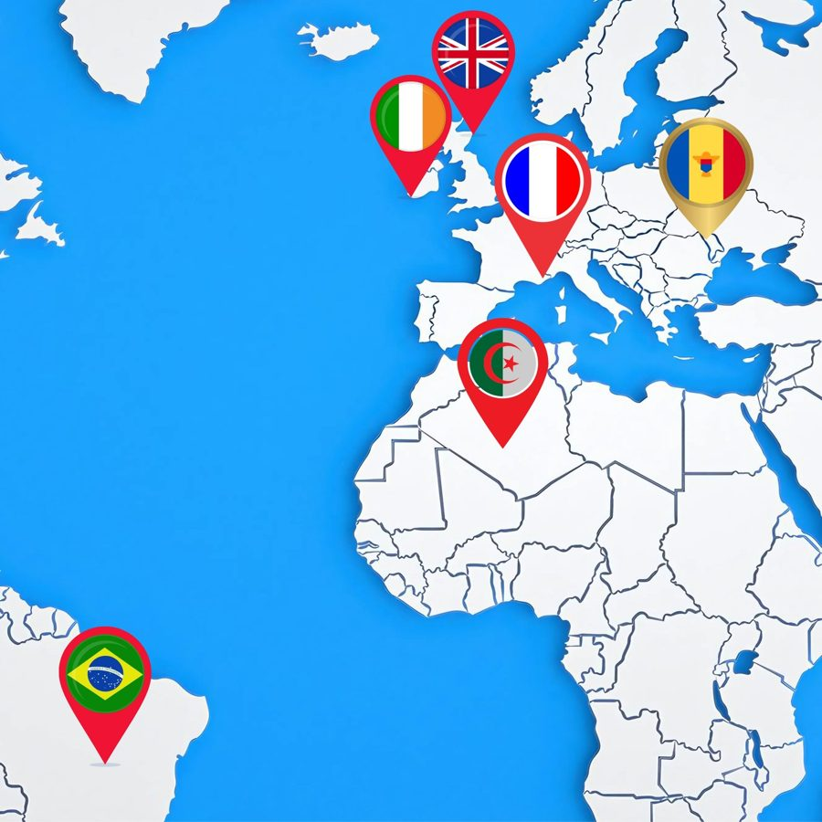
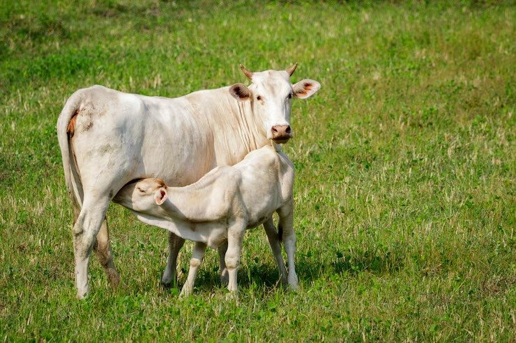

Our Mission
To connect premium livestock to global markets through responsible trade, world-class logistics, and a deep commitment to animal welfare. We aim to deliver every shipment with care, compliance, and complete transparency.
Global Livestock Shipping · Est. 2024
At Live Ark Export, we specialize in sourcing and delivering top quality cattle breeds including Angus, Simmental, Charolais, Nelore, and more to global markets. With years of experience across Europe, South America, and the Middle East, we ensure every animal is transported with the highest standards of care. Backed by a fleet of dedicated livestock vessels, we handle the journey from farm to destination with precision and reliability.
About Us
Live Ark Export — Redefining Global Livestock Trade

Live Ark Export was founded on a simple but powerful mission to elevate the global livestock trade through transparency, ethical standards, and unmatched quality.
Built on decades of industry experience, our company is driven by a deep commitment to animal welfare, international trust, and operational excellence.
We specialize in the export of premium livestock breeds including Limousin, Brangus, Zebu, Aubrac, Hereford, and more to discerning markets around the world. Our reach extends across Europe, the Middle East, North Africa, South America, and Asia, with an integrated supply chain that ensures complete control from source to destination.
Our success is rooted in long-standing partnerships with farms, quarantine facilities, and logistics providers across multiple continents, allowing us to deliver consistency, quality, and care at every stage of the journey.
Our head office is located in Ireland, with regional offices and trusted partners across Europe, the Arab world, the Americas, and Asia.
With our headquarters in Ireland and a strategic network of regional offices and trusted partners across the globe, we maintain an active presence in:
This global footprint allows us to serve our clients with flexibility, speed, and precision—no matter where they are.
To connect premium livestock to global markets through responsible trade, world-class logistics, and a deep commitment to animal welfare. We aim to deliver every shipment with care, compliance, and complete transparency.
To be a global leader in ethical livestock export known not just for our reach, but for our reliability, integrity, and compassion in every step of the journey.
Our purpose
Our top priority is the health and well-being of the animals. From the moment they are selected to the moment they arrive at their destination, we make sure they are treated with care and respect. Our team follows proper handling methods, provides clean spaces, and ensures they are well-fed, hydrated, and comfortable throughout the journey.
Every part of the export process matters — from the farm, to quarantine, to loading, to shipping. We take full responsibility for each stage. That means checking the details, following the rules, and being clear with our partners and clients. We believe in doing things the right way, every time.
Over the years, we’ve built a strong reputation by doing our job well. Shipments arrive on time. Animals arrive healthy. Our clients know they can count on us because we’ve done it before — again and again — across many countries and trade routes. We believe good service speaks for itself, and we work hard to keep it that way.
What we do
From certified farms to the destination port, every stage of the export is handled by one accountable team.

We partner directly with certified farms and breeders across Europe and South America to source top-tier cattle breeds.

All livestock undergo rigorous veterinary screening and pre-export quarantine in our licensed holding facilities.

We operate a fleet of specialized livestock vessels with capacities ranging from 2,000 to over 11,000 head.
Our team handles all pre-departure and arrival documentation with local authorities, port officials, and customs.
Our Vessels
At Live Ark Export, we operate a specialized fleet of livestock vessels engineered for safe, compliant, and humane animal transport. Every vessel in our lineup meets or exceeds international standards for animal welfare and shipping logistics. With capacities ranging from a few thousand to over 11,000 heads, our ships are trusted for both regional and long-haul voyages.
Below is a closer look at the vessels that power our global livestock operations:
The Live Ark difference
Carefully selected, certified livestock breeds
01From farm selection to port delivery
02Prioritizing animal welfare at every stage
03Access to a wide fleet of livestock carriers worldwide
04Serving governments, importers, and private clients globally
05Good to know
Can’t find what you’re looking for? Our team is one message away.
We primarily export live cattle, including dairy, beef, and breeding stock. Specific breeds include Angus, Hereford, Limousin, Charolais, Simmental, Belgian Blue, and Nelore. We can also accommodate custom requests depending on your market needs.
We export livestock to the Middle East, North Africa, and parts of Asia. Some of our regular destinations include Libya, Egypt, Jordan, Lebanon, UAE, and Turkey. We also operate from source countries including Romania, Brazil, Uruguay, Spain, and Ireland.
Animal care is at the heart of what we do. Our vessels are equipped with proper ventilation, temperature control, feeding systems, fresh water production, and hospital pens. We follow international standards and work with licensed veterinarians at every stage.
Yes. We comply with EU standards, USDA guidelines, and all destination-country regulations. All animals are inspected and certified before export, and full documentation is provided for every shipment.
We operate licensed pre-export quarantine facilities where livestock undergo health screening, vaccinations, and veterinary checks before departure. Only animals that meet all health requirements are cleared for export.
Talk to our team
Worldwide




With our headquarters in Ireland and a strategic network of regional offices and trusted partners across the globe, we maintain an active presence in:
This global footprint allows us to serve our clients with flexibility, speed, and precision, no matter where they are.


Your next shipment
Join forces with Live Ark Export for trustworthy and ethical transportation of livestock worldwide. Contact us today to discuss your next shipment. Your animals deserve the best.